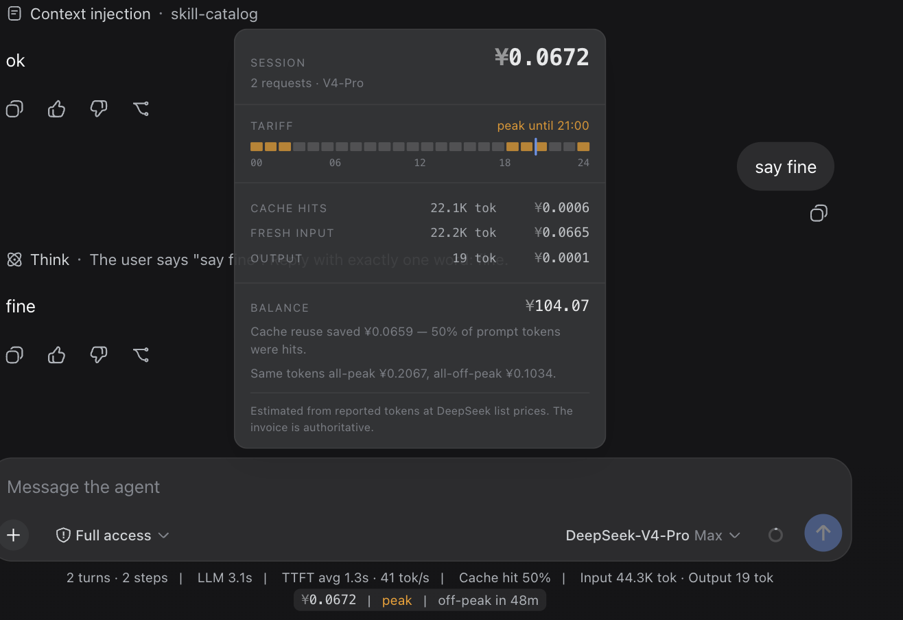

dsh plugin · MIT · not affiliated with DeepSeek
DeepSeek bills by the hour now. This is the meter for it.
Two peak windows a day, off-peak at half the peak rate. Cost stopped being a number you read afterwards and became a rate you are standing in.
One line under the dsh composer: what this session cost, which tariff is running, how long until it flips. Hover it for the tariff clock, the cache economics, and your balance.
What it looks like in place

0.1.0-rc.6,
2026-08-15: the clock is live, the money is flat-rate, because the session
predates the switchover the next section describes.-
two currencies, no conversion
DeepSeek publishes two independent rate cards, USD and CNY, and neither is a conversion of the other — so a meter that picks with an exchange rate is wrong twice. This one computes both and lets
/user/balancesay which one your account is billed in. -
priced at dispatch, not at finish
A request sent at 00:59 UTC is billed off-peak even if it streams into the peak window. A session that spans a boundary is billed correctly on both sides.
-
the agent never sees it
No tool, no system-prompt section, no message, no model call. The plugin does not touch the request, so it costs zero tokens and cannot move your KV cache. Cost belongs to the person paying.
-
estimate, and it says so
List prices times provider-reported tokens, folded from the durable session log — it survives paging, compaction and a server restart. Checked against a real bill: 188,542 cache-miss tokens on pro, off-peak, settled at ¥0.84 — ¥4.46/1M against the published 4.5.
The rate card it carries
| per 1M tokens | cache hit | cache miss | output |
|---|---|---|---|
| v4-flash off-peak | $0.007 / ¥0.05 | $0.22 / ¥1.5 | $0.66 / ¥4.5 |
| v4-flash peak | $0.014 / ¥0.1 | $0.44 / ¥3 | $1.32 / ¥9 |
| v4-pro off-peak | $0.022 / ¥0.15 | $0.66 / ¥4.5 | $1.98 / ¥13.5 |
| v4-pro peak | $0.044 / ¥0.3 | $1.32 / ¥9 | $3.96 / ¥27 |
Peak is 01:00–04:00 and 06:00–10:00 UTC (09:00–12:00 and 14:00–18:00 Beijing); every other hour is off-peak, including the two-hour gap between the windows. Off-peak is exactly half of peak. A cache hit bills at 1/30 of a miss, which is the ratio worth designing a prompt around. These rates are diffed against DeepSeek's own pricing pages, both locales, by a job that runs every day and opens an issue on any disagreement — last confirmed in sync 2026-08-20. The retired flat card is kept in the plugin so old sessions still cost what they actually cost.
Building your own estimator? Take the card, not these numbers:
pricing.json is the
same table as machine-readable JSON — both currencies, both tariffs, the UTC
schedule and the billed-bucket definitions, generated from the file the plugin runs on.
No key, no rate limit.
Install
dsh plugin forwards to pnpm, so pnpm must be on PATH. Nothing else to
configure — the meter appears under the composer as soon as a session bills its
first request. Node 20+.
The balance read is optional. It runs on the host
against the same credential seam the LLM adapter uses; the browser gets parsed
numbers and never the key. Set balance: false in your profile to turn it
off entirely — the meter keeps working.
Full documentation, configuration keys and known limitations live in the README (中文).